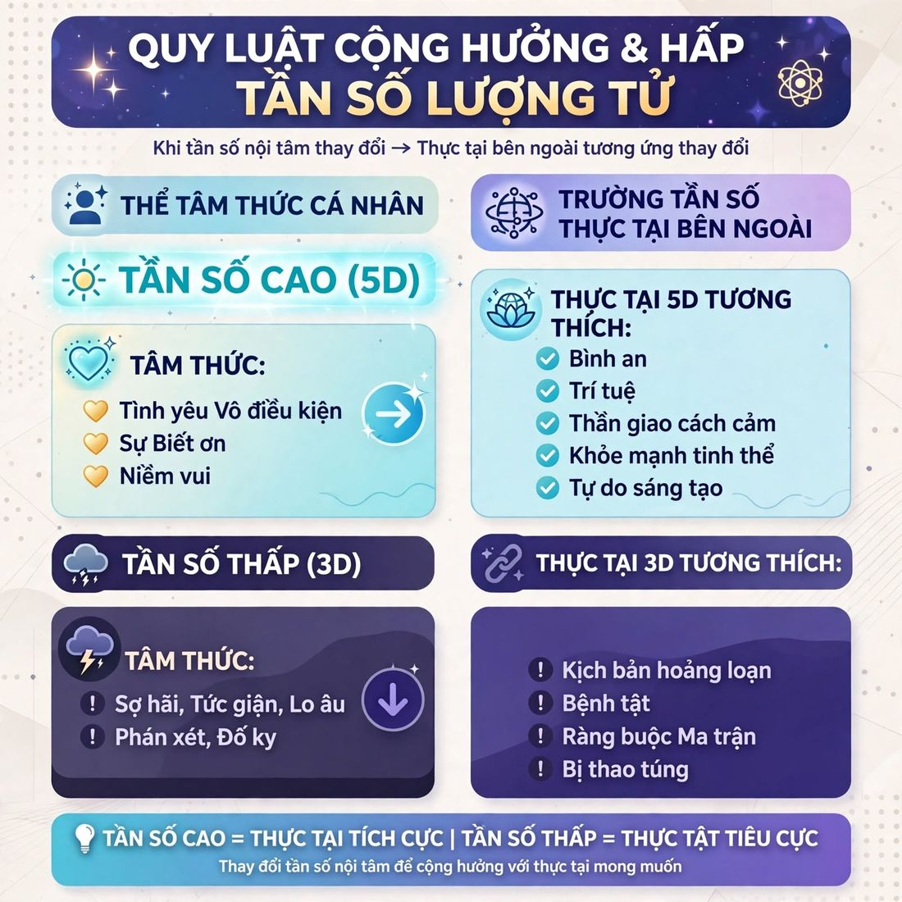
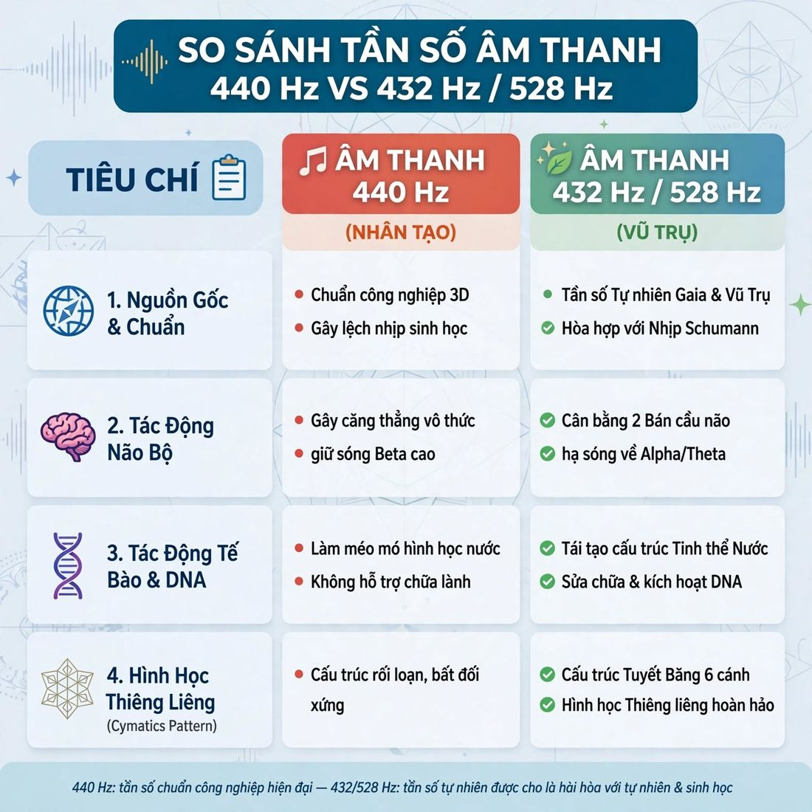
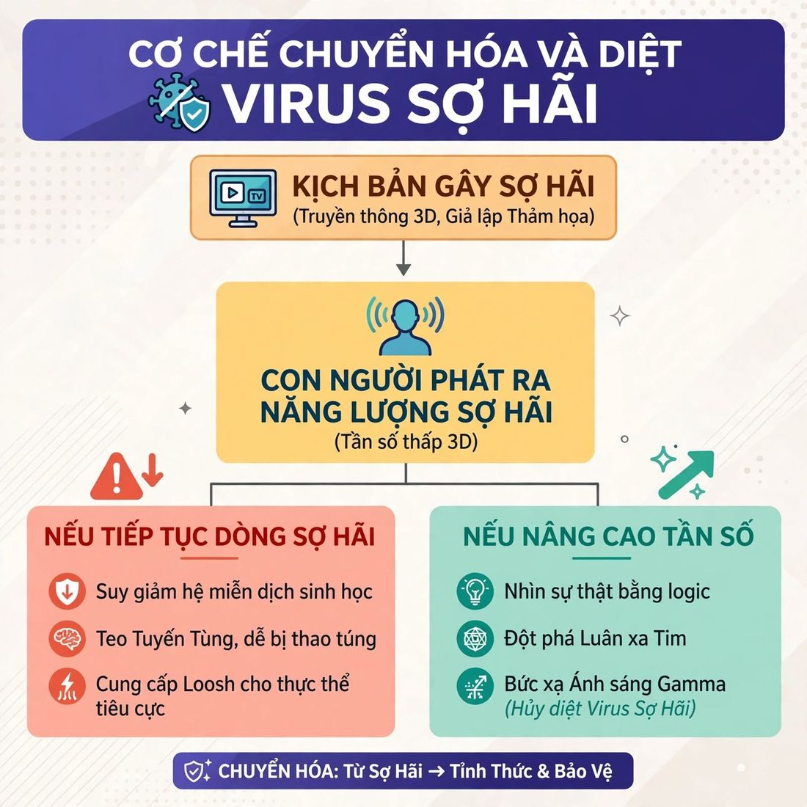
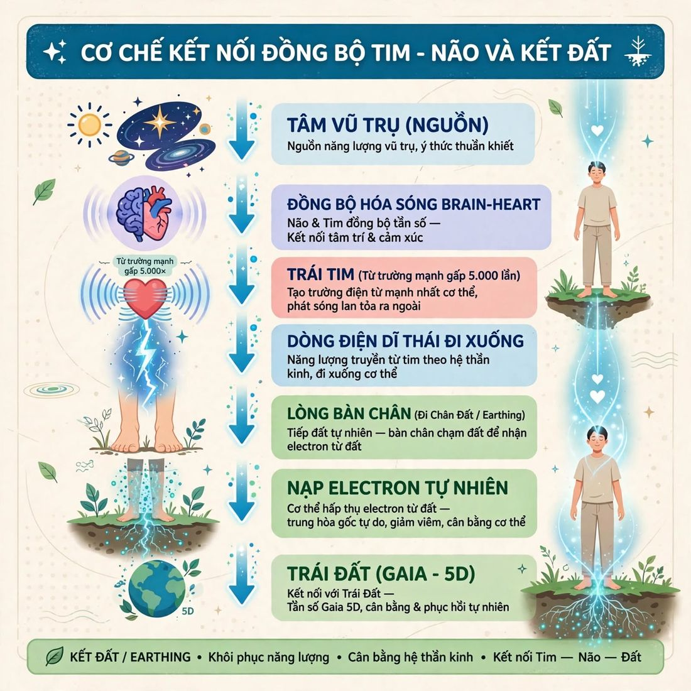
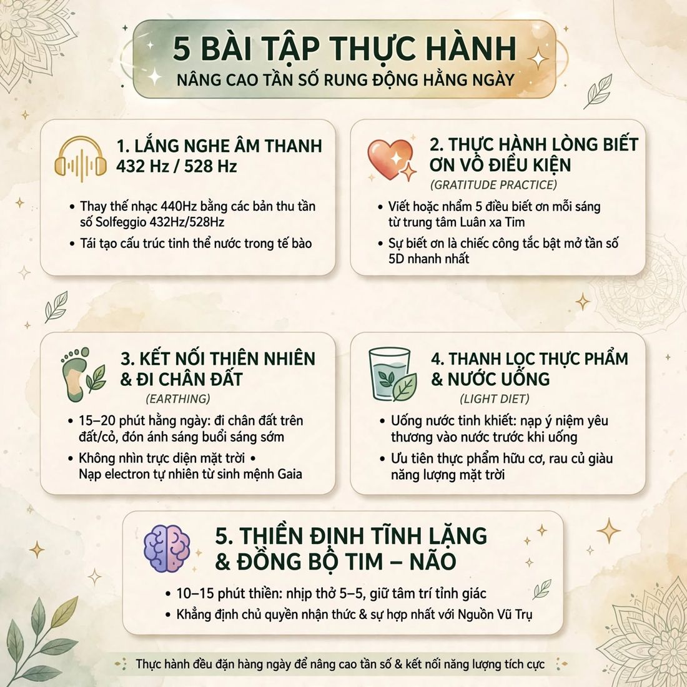

Trang chủ / Chuyên đề 9: Cẩm Nang Tâm Thức Vũ Trụ / Kỳ 86
Chuyên đề 9 · Kỳ 86 / 90
PHƯƠNG PHÁP NÂNG CAO TẦN SỐ RUNG ĐỘNG (VIBRATION & FREQUENCY)

1. Bản Chất Vũ Trụ Là Tần Số: Luật Hấp Dẫn Tần Số Lượng Tử
Trong nền vật lý học tiên tiến của các văn minh thiên hà, toàn bộ Đa vũ trụ không phải là một tập hợp các vật thể tĩnh lặng, mà là một đại dương năng lượng đang liên tục dao động. Mọi suy nghĩ, cảm xúc, tế bào sinh học, lời nói cho đến các ngôi sao và hành tinh đều phát ra một dải tần số rung động cụ thể, được đo lường bằng tốc độ chu kỳ dao động trên mỗi giây (Hertz - Hz).
Luật Hấp Dẫn Tần Số (Quantum Frequency Attraction): Những gì có cùng tần số dao động sẽ tự động hút về phía nhau và hòa quyện vào nhau.
Khi cá nhân duy trì dải tần số cao (gắn liền với Tình yêu Vô điều kiện, Sự Biết ơn và Hòa hợp), trường hào quang sinh học sẽ tạo ra một lá chắn năng lượng mạnh mẽ, tự động đẩy lùi mọi kịch bản hoảng loạn, bệnh tật hay sóng thao túng tiêu cực.
Ngược lại, khi tâm thức chìm trong dải tần số thấp (Sợ hãi, Giận dữ, Đố kỵ), cá nhân đang tự hạ thấp điện thế nơ-rôn, biến trường năng lượng của mình thành "mồi ngon" cho các thực thể ký sinh Loosh và bị trói chặt trong ma trận ảo tưởng 3D.
Vũ trụ vận hành dựa trên nguyên lý cộng hưởng sóng dừng (Standing Wave Resonance). Khi bạn điều chỉnh trạng thái nhận thức bên trong lên một tần số mới, toàn bộ thế giới quan và thực tại vật lý xung quanh bạn bắt buộc phải chuyển dịch để tương thích với tần số đó. Đây chính là bản chất của tiến trình thăng hoa tâm thức từ 3D lên 5D.

2. Thang Âm Solfeggio Vũ Trụ (432 Hz & 528 Hz) & Hình Học Thiêng Liêng
Một trong những chiến dịch thao túng âm thanh ngầm hiểm hóc nhất trên Trái Đất là việc áp đặt chuẩn tần số âm nhạc quốc tế 440 Hz từ giữa thế kỷ 20, thay thế cho chuẩn tần số tự nhiên 432 Hz. Tần số 440 Hz phát ra các dải sóng bất cân bằng, gây ra sự căng thẳng vi mô trong vỏ não và giữ sóng brainwave con người duy trì ở dải Beta cao.
Thang Âm Solfeggio Cổ Đại & Công Dụng Tần Số
Thang âm Solfeggio bao gồm các dải tần số âm thanh có khả năng giải mã và tái tạo trường năng lượng thể xác lẫn thể dĩ thái:
396 Hz: Giải phóng cảm giác tội lỗi, sợ hãi và loại bỏ các khối năng lượng tắc nghẽn tại Luân xa Gốc.
417 Hz: Phá vỡ các mô hình cảm xúc tiêu cực cũ, kích hoạt sự thay đổi và tái tạo tế bào.
432 Hz (Tần số Hòa hợp Vũ trụ): Tần số dao động dựa trên tỷ lệ vàng của Đa vũ trụ, hòa hợp tuyệt đối với nhịp đập Schumann của Trái Đất (7,83 Hz), mang lại sự bình thản sâu sắc cho tâm trí.
528 Hz (Tần số Chữa lành & Biến đổi Kỳ diệu): Tác động trực tiếp lên hình học tinh thể nước trong tế bào, hỗ trợ sửa chữa các tổn thương trên chuỗi DNA và giải vôi hóa Tuyến Tùng.
639 Hz: Tăng cường sự kết nối thấu cảm, hàn gắn các mối quan hệ và mở rộng Luân xa Tim.
741 Hz: Thanh lọc độc tố tế bào, làm sạch trường hào quang khỏi sóng nhiễu điện từ.
852 Hz & 963 Hz: Kích hoạt Con Mắt Thứ Ba, mở rộng Luân xa Vương Miện và tái kết nối với Ý thức Nguồn Vũ Trụ.
Hình Học Thiêng Liêng (Sacred Geometry) & Âm Học Sóng Nước
Khi âm thanh tần số cao (như 432 Hz hay 528 Hz) tác động lên vật chất (nước hoặc cát), khoa học âm học (Cymatics) chứng minh nó tạo ra các hoa văn hình học hoàn hảo như Bông Hoa Sự Sống (Flower of Life), Khối Bát Diện hay Cấu trúc Tinh thể Tuyết 6 cánh. Cơ thể con người chứa hơn 70% là nước. Việc lắng nghe âm thanh tần số chuẩn giúp tái cấu trúc các phân tử nước trong tế bào thành các hình thể tinh thể lục giác đối xứng, giúp nâng cấp hệ miễn dịch và gia tăng khả năng dẫn truyền sóng vô hướng.

3. Vượt Qua "Virus Sợ Hãi" Và Sự Thao Túng Cảm Xúc Tiêu Cực
Nỗi sợ hãi không đơn thuần là một cảm giác tâm lý. Dưới góc nhìn năng lượng dĩ thái, Nỗi Sợ Hãi là một loại "Virus Tần Số" bị phe bóng tối cố tình gieo rắc nhằm thu hoạch năng lượng cảm xúc tiêu cực (Loosh Farming).
Phương Pháp Chiếu Sáng Đêm Tối (Tư Duy Ngôi Sao):
Khi đối mặt với các tin tức hoảng loạn hay các đợt tấn công tâm lý:
Không Chối Bỏ Nhưng Không Đồng Hóa: Quan sát nỗi sợ hãi như một quan sát viên trung lập. Nhận biết rằng nỗi sợ chỉ là một kịch bản giả lập tần số 3D được thiết kế để rút cạn năng lượng của bạn.
Kích Hoạt Luân Xa Tim: Thay vì phát ra sự oán giận hay sợ hãi đối ứng, hãy phát ra Tình yêu Vô điều kiện và sự thấu hiểu từ Luân xa Tim. Tình yêu thương có tần số dao động cao gấp hàng ngàn lần nỗi sợ hãi, khiến cấu trúc sóng tiêu cực bị bẻ gãy ngay khi chạm vào trường hào quang của bạn.
Chuyển Dịch Điểm Chú Ý: Tập trung năng lượng vào những giải pháp tích cực, sự sáng tạo và các hoạt động nâng cao sinh lực thay vì chìm đắm trong các cuộc tranh luận nhị nguyên 3D.

4. Đồng Bộ Tim - Não (Heart-Brain Coherence) & Đi Chân Đất Kết Nối Gaia (Earthing)
Để nâng cao tần số rung động một cách bền vững, việc thực hành Đồng Bộ Tim - Não (Heart-Brain Coherence) kết hợp với Kết Đất (Earthing) là hai phương pháp tự nhiên và mạnh mẽ nhất.
Trạng Thái Đồng Bộ Tim - Não: Khi nhịp thở của bạn chậm lại (5 giây hít vào - 5 giây thở ra) kết hợp với cảm xúc biết ơn tại Luân xa Tim, từ trường hình xuyến của tim sẽ đồng bộ nhịp đập với sóng điện não. Trạng thái này giúp giải phóng hoóc-môn Oxytocin, nâng cao khả năng miễn dịch, dập tắt căng thẳng và mở rộng băng thông trực giác.
Kỹ Thuật Đi Chân Đất Kết Nối Gaia (Earthing): Lòng bàn chân chứa hàng ngàn đầu dây thần kinh và điểm thu phát năng lượng (Luân xa bàn chân). Đi chân đất trên cỏ, đất thô hay bãi biển giúp cơ thể nạp trực tiếp các electron tự do từ Trái Đất, dập tắt các gốc tự do gây viêm nhiễm, trung hòa tĩnh điện tiêu cực và đồng bộ nhịp sinh học với tần số Schumann của Gaia (7,83 Hz).

5. Quy Trình 5 Bài Tập Thực Hành Nâng Cao Tần Số Hằng Ngày
Dưới đây là quy trình 5 bài tập thực hành đơn giản nhưng mang lại hiệu quả nâng cao tần số rung động vô cùng mạnh mẽ hằng ngày:
Hướng Dẫn Nạp Ý Niệm Vào Nước Uống (Cơ Chế Masaru Emoto):
Trước khi uống nước, hãy cầm ly nước bằng cả hai tay, đưa lên ngang ngực (Luân xa Tim), nhắm mắt và phát ra ý niệm hoặc lời nói thầm: "Cảm ơn bạn Nước, Tình yêu và Sự chữa lành." Trường từ từ Luân xa Tim sẽ tái cấu trúc phân tử nước thành tinh thể hình học hoàn hảo, giúp biến ly nước thông thường thành nguồn năng lượng sinh học chữa lành cho cơ thể.

6. Kết Luận: Bạn Chính Là Đài Phát Sóng Tần Số Của Thực Tại
Nâng cao tần số rung động không phải là một hành trình trốn chạy thực tại 3D, mà là tiến trình làm chủ và biến đổi thực tại từ bên trong tâm thức.
Khi bạn chủ động chọn sống trong Tình yêu Vô điều kiện, sự Thấu cảm và Sự biết ơn:
Bạn tự tay tạo ra lá chắn bảo vệ hào quang vững chắc trước mọi sóng can thiệp tiêu cực.
Bạn trở thành một điểm sáng tần số cao, lan tỏa năng lượng chữa lành cho gia đình, cộng đồng và hành tinh.
Bạn chuyển dịch dải nhận thức của mình sang mốc thời gian 5D rực rỡ, sẵn sàng hội nhập vào Cộng đồng Thiên hà Tự do.
Hãy nhớ rằng: Vũ trụ không phản hồi những gì bạn muốn, Vũ trụ phản hồi những gì bạn đang dao động. Hãy phát ra tần số của Ánh sáng và Tình yêu ngay trong giây phút này!